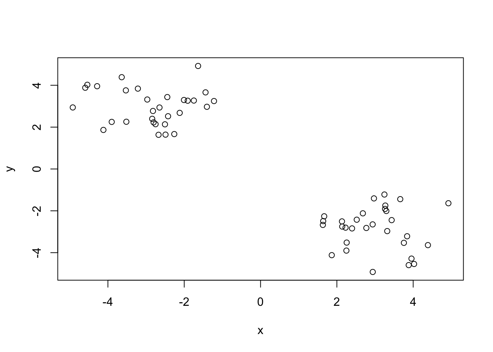
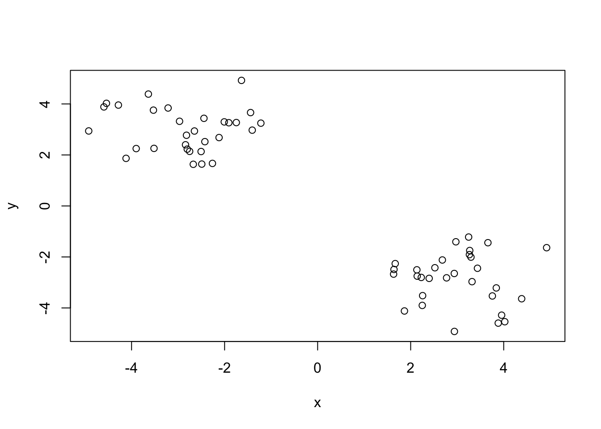
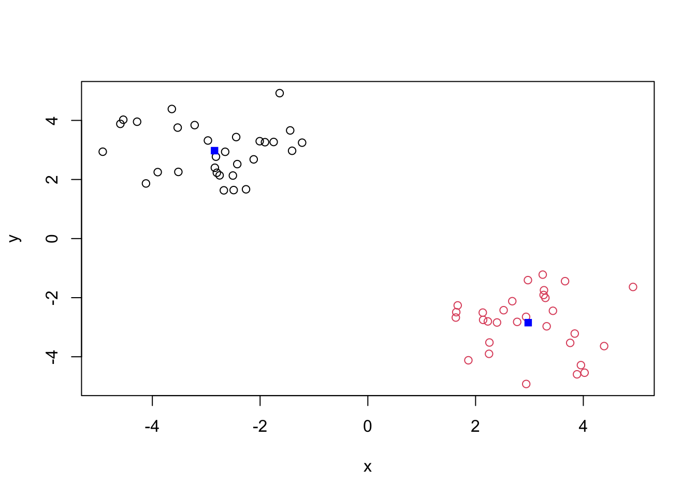
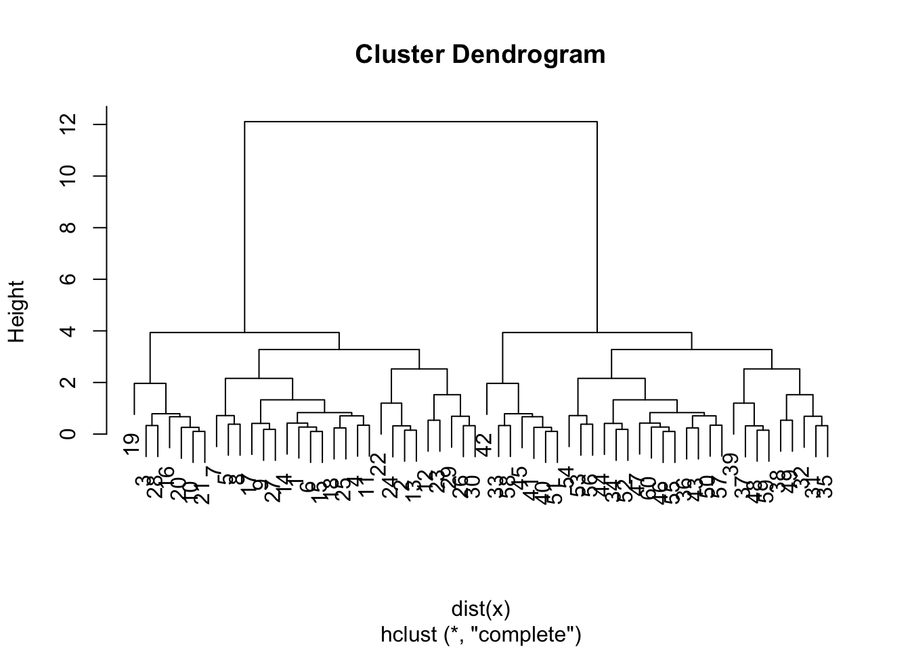
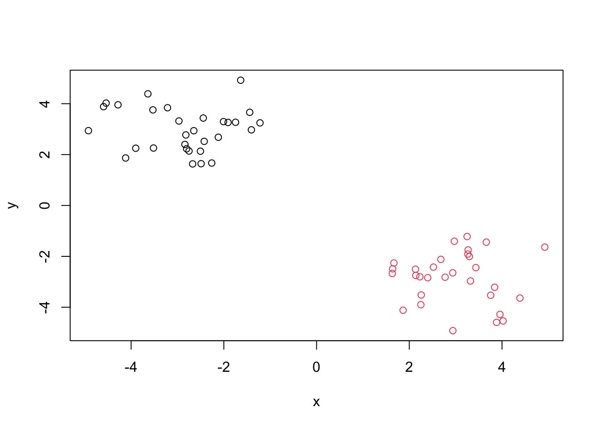
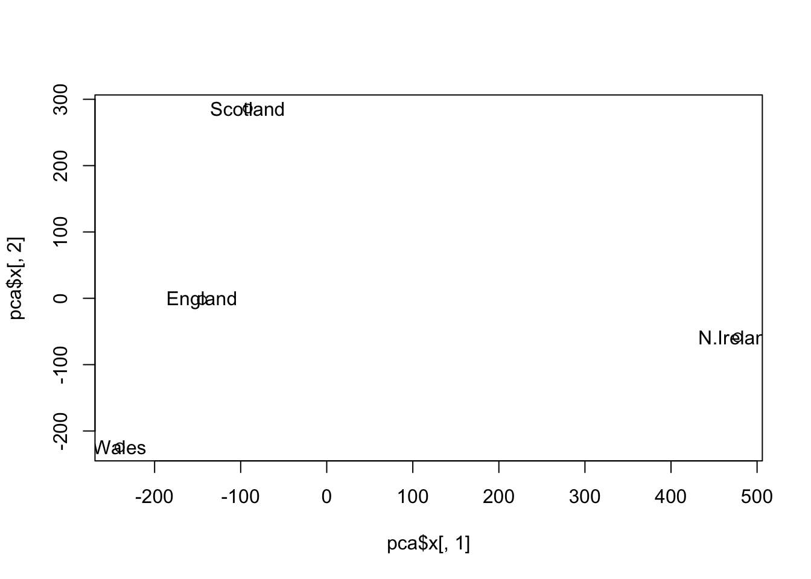
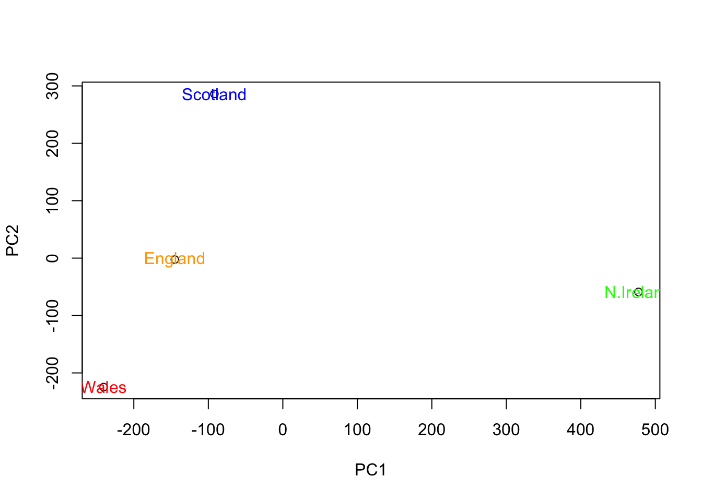
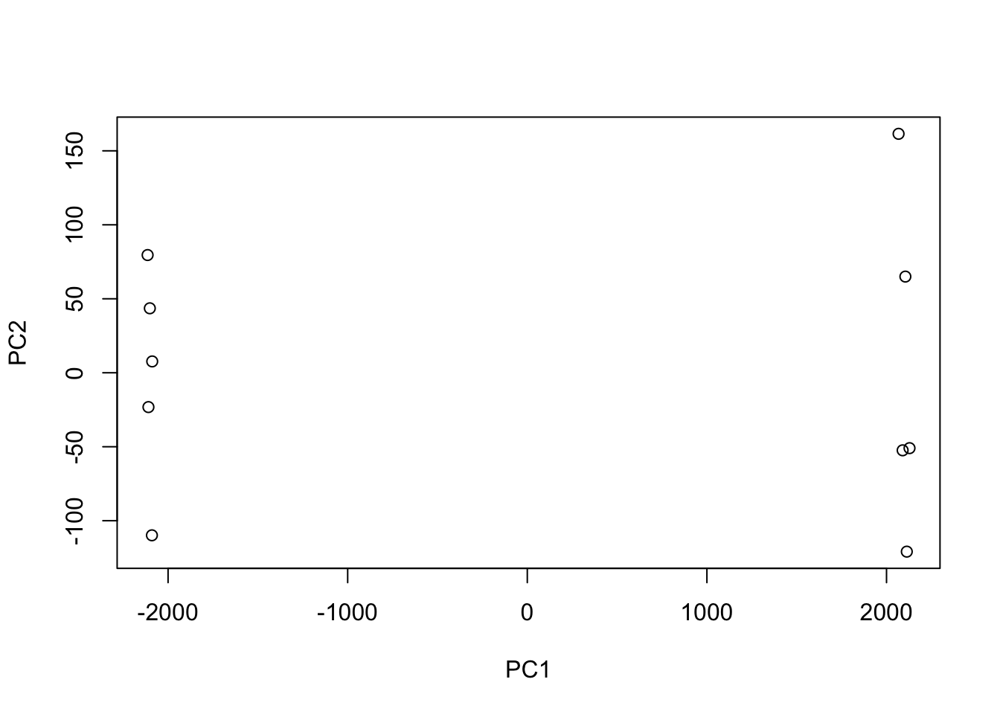
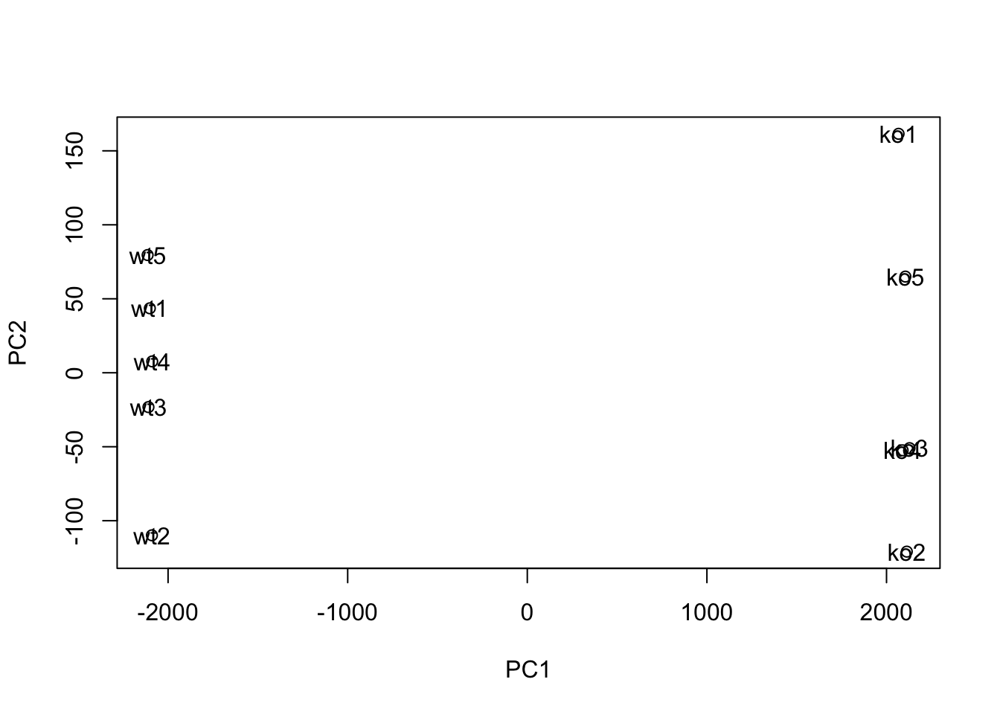

tmp <- c(rnorm(30, -3), rnorm(30, 3))
x <- cbind(x = tmp, y = rev(tmp))
plot(x)
Demo ad using kmeans() function in base R. First make up some data with a known structure.
tmp <- c(rnorm(30, -3), rnorm(30, 3))
x <- cbind(x = tmp, y = rev(tmp))
plot(x)
Now we have some made up data in x let’s see how kmeans () works with this data.
k <- kmeans(x, centers = 2, nstart = 20)
kK-means clustering with 2 clusters of sizes 30, 30
Cluster means:
x y
1 -2.845805 2.976510
2 2.976510 -2.845805
Clustering vector:
[1] 1 1 1 1 1 1 1 1 1 1 1 1 1 1 1 1 1 1 1 1 1 1 1 1 1 1 1 1 1 1 2 2 2 2 2 2 2 2
[39] 2 2 2 2 2 2 2 2 2 2 2 2 2 2 2 2 2 2 2 2 2 2
Within cluster sum of squares by cluster:
[1] 50.56578 50.56578
(between_SS / total_SS = 91.0 %)
Available components:
[1] "cluster" "centers" "totss" "withinss" "tot.withinss"
[6] "betweenss" "size" "iter" "ifault" Q. How many points are in each cluster?
k$size [1] 30 30Q. How do we go to the cluster membership/assignment?
k$cluster [1] 1 1 1 1 1 1 1 1 1 1 1 1 1 1 1 1 1 1 1 1 1 1 1 1 1 1 1 1 1 1 2 2 2 2 2 2 2 2
[39] 2 2 2 2 2 2 2 2 2 2 2 2 2 2 2 2 2 2 2 2 2 2Q. What about cluster centers?
k$centers x y
1 -2.845805 2.976510
2 2.976510 -2.845805Now we got to the main results, let’s use them to plot our data with the kmeans() result.
plot(x, col = k$cluster)
points(k$centers, col = "blue", pch = 15)
We will cluster the sama data x with the hclust(). In this case hclust() requires a distance matrix as input.
hc <- hclust(dist(x))
hc
Call:
hclust(d = dist(x))
Cluster method : complete
Distance : euclidean
Number of objects: 60 Let’s plot our hclut result.
plot(hc)
To get our cluster membership vector, we need to “cut” the tree with the cutree() function.
grps <- cutree(hc, h = 8)
grps [1] 1 1 1 1 1 1 1 1 1 1 1 1 1 1 1 1 1 1 1 1 1 1 1 1 1 1 1 1 1 1 2 2 2 2 2 2 2 2
[39] 2 2 2 2 2 2 2 2 2 2 2 2 2 2 2 2 2 2 2 2 2 2Now let’s plot our data with the hclust() results.
plot(x, col = grps)
Read data from website and try a few visualizations.
url <- "https://tinyurl.com/UK-foods"
x <- read.csv(url, row.names = 1)
x England Wales Scotland N.Ireland
Cheese 105 103 103 66
Carcass_meat 245 227 242 267
Other_meat 685 803 750 586
Fish 147 160 122 93
Fats_and_oils 193 235 184 209
Sugars 156 175 147 139
Fresh_potatoes 720 874 566 1033
Fresh_Veg 253 265 171 143
Other_Veg 488 570 418 355
Processed_potatoes 198 203 220 187
Processed_Veg 360 365 337 334
Fresh_fruit 1102 1137 957 674
Cereals 1472 1582 1462 1494
Beverages 57 73 53 47
Soft_drinks 1374 1256 1572 1506
Alcoholic_drinks 375 475 458 135
Confectionery 54 64 62 41cols <- rainbow(nrow(x))
barplot(as.matrix(x), col = cols)
barplot(as.matrix(x), col = cols, beside = TRUE)
pairs(x, col = cols)
PCA to the rescue. The main base R PCA function is called prcomp() and we will need to give it the transpose of our input data.
pca <- prcomp(t(x))There is a nice summary of how well PCA is doing.
summary(pca)Importance of components:
PC1 PC2 PC3 PC4
Standard deviation 324.1502 212.7478 73.87622 3.176e-14
Proportion of Variance 0.6744 0.2905 0.03503 0.000e+00
Cumulative Proportion 0.6744 0.9650 1.00000 1.000e+00attributes(pca)$names
[1] "sdev" "rotation" "center" "scale" "x"
$class
[1] "prcomp"To make our new PCA plot (aka PCA score plot) we access pca$x.
plot(pca$x[,1], pca$x[,2])
text(pca$x[,1], pca$x[,2], colnames(x))
Color the plot.
country_cols <- c("orange", "red", "blue", "green")
plot(pca$x[,1], pca$x[,2], xlab = "PC1", ylab =
"PC2")
text(pca$x[,1], pca$x[,2], colnames(x), col = country_cols)
Read in data from website.
url2 <- "https://tinyurl.com/expression-CSV"
rna.data <- read.csv(url2, row.names=1)
head(rna.data) wt1 wt2 wt3 wt4 wt5 ko1 ko2 ko3 ko4 ko5
gene1 439 458 408 429 420 90 88 86 90 93
gene2 219 200 204 210 187 427 423 434 433 426
gene3 1006 989 1030 1017 973 252 237 238 226 210
gene4 783 792 829 856 760 849 856 835 885 894
gene5 181 249 204 244 225 277 305 272 270 279
gene6 460 502 491 491 493 612 594 577 618 638Q. How many genes and samples are in this data set?
pca <- prcomp( t(rna.data))
summary(pca)Importance of components:
PC1 PC2 PC3 PC4 PC5 PC6
Standard deviation 2214.2633 88.9209 84.33908 77.74094 69.66341 67.78516
Proportion of Variance 0.9917 0.0016 0.00144 0.00122 0.00098 0.00093
Cumulative Proportion 0.9917 0.9933 0.99471 0.99593 0.99691 0.99784
PC7 PC8 PC9 PC10
Standard deviation 65.29428 59.90981 53.20803 2.647e-13
Proportion of Variance 0.00086 0.00073 0.00057 0.000e+00
Cumulative Proportion 0.99870 0.99943 1.00000 1.000e+00nrow(rna.data)[1] 100Do our PCA plot of this RNA-Seq data
plot(pca$x[,1], pca$x[,2], xlab = "PC1", ylab =
"PC2")
plot(pca$x[,1], pca$x[,2], xlab = "PC1", ylab =
"PC2")
text(pca$x[,1], pca$x[,2], colnames(rna.data))